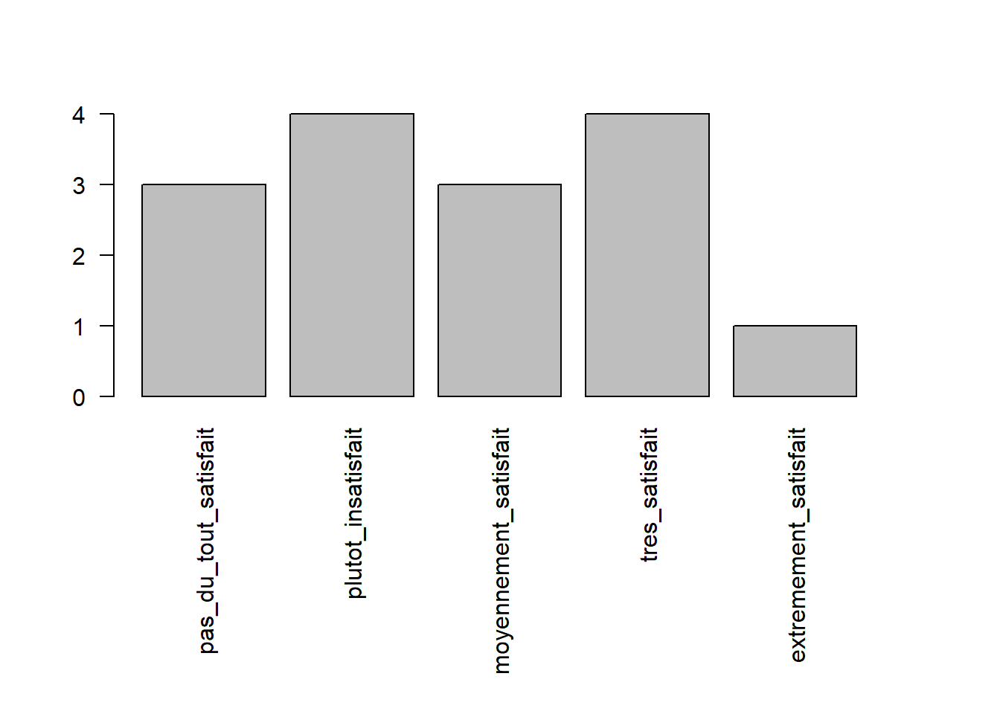

Chapter 5 Description des données quantitatives et qualitatives
Ce deuxième chapitre regroupe quelques fonctions pour décrire numériquement et graphiquement les variables quantitatives et qualitatives. Des fonctions spécifiques doivent être utilisées relativement à la nature de la variable.
## 'data.frame': 15 obs. of 7 variables:
## $ Identifiant : int 314 323 547 336 678 442 667 890 426 789 ...
## $ Age : int 21 17 18 22 29 72 34 28 75 48 ...
## $ Poids : num 50.5 46 57.7 52 60 87 66 58.2 89 77 ...
## $ Grandeur : int 166 159 170 177 178 182 176 163 179 165 ...
## $ Satisfaction: chr "extremement_satisfait" "moyennement_satisfait" "plutot_insatisfait" "pas_du_tout_satisfait" ...
## $ Sport : int 180 120 60 30 200 0 180 60 90 320 ...
## $ Sexe : chr "F" "F" "F" "M" ...On observe qu’il existe plusieurs types de variables.
5.1 Description numérique
5.1.1 Variables qualitatives
La variable “Sexe” est une variable qualitative nominale. Lorsque l’on regarde dans la base de données, on observe qu’elle est considérée comme une chaine de caractères. Il est dès lors possible de la transformer en facteur. Une situation similaire arrive avec la variable “Satisfaction” qui est une variable qualitative ordinale. Il est également possible de la transformer afin d’obtenir un facteur ordonné. Pour les deux cas, la transformation s’effectue grâce à la fonction factor(). Lorsque la variable est ordinale, des arguments doivent être ajouté afin de préciser qu’il s’agit d’un facteur ordonné et de donner l’ordre des niveaux.
## [1] F F F M M M M F M F F F F M F
## Levels: F Mdf$Satisfaction <- factor(df$Satisfaction, ordered = TRUE,
levels = c("pas_du_tout_satisfait", "plutot_insatisfait",
"moyennement_satisfait", "tres_satisfait",
"extremement_satisfait"))
df$Satisfaction## [1] extremement_satisfait moyennement_satisfait plutot_insatisfait
## [4] pas_du_tout_satisfait tres_satisfait pas_du_tout_satisfait
## [7] moyennement_satisfait plutot_insatisfait moyennement_satisfait
## [10] tres_satisfait plutot_insatisfait pas_du_tout_satisfait
## [13] plutot_insatisfait tres_satisfait tres_satisfait
## 5 Levels: pas_du_tout_satisfait < ... < extremement_satisfaitPour les variables qualitatives, la description numérique classique est le tableau de contingence que l’on obtient avec la fonction table(). Il est possible de décrire chaque variable à la fois ou de décrire une variable en fonction d’une autre.
##
## F M
## 9 6##
## pas_du_tout_satisfait plutot_insatisfait moyennement_satisfait
## 3 4 3
## tres_satisfait extremement_satisfait
## 4 1##
## pas_du_tout_satisfait plutot_insatisfait moyennement_satisfait
## F 1 4 1
## M 2 0 2
##
## tres_satisfait extremement_satisfait
## F 2 1
## M 2 05.1.2 Variables quantitatives
Les variables quantitatives sont généralement décrites à l’aide de:
- Mesures de tendance centrale: mode, moyenne, médiane
- Mesures de dispersion: étendue, espace interquartile, variance et écart-type
La moyenne et la médiane peuvent se calculer directement avec les fonctions mean()et median() respectivement. Le mode d’une variable peut s’obtenir en analysant le tableau de contingence. Dans notre cas, on observe qu’il n’y a pas de mode étant donné qu’aucun âge apparaît plusieurs fois.
## [1] 34.66667## [1] 29##
## 17 18 20 21 22 25 28 29 32 34 35 44 48 72 75
## 1 1 1 1 1 1 1 1 1 1 1 1 1 1 1L’étendue d’une variable peut s’obtenir en soustrayant la valeur maximale et la valeur minimale d’une variable. La variance et l’écart-type s’obtiennent directement avec les fonctions var()et sd()respectivement. L’espace interquartile, utilisé pour construire le boxplot, s’obtient grâce à la fonction IQR().
## [1] 17## [1] 75## [1] 58## [1] 329.6667## [1] 18.15673## [1] 185.2 Description graphique
5.2.1 Variables qualitatives
Les variables qualitatives peuvent être représentées grâce à des graphiques en barre ou des graphiques en camembert. Les fonctions barplot()et pie()permettent de représenter les tableaux de contingence. Pour rappel, il est possible de sauver un objet dans l’environnement et de l’utiliser ensuite directement pour faire les graphes. C’est ce qui est proposé pour le tableau de contigence de la variable “Satisfaction”.




5.2.2 Variables quantitatives
Les variables quantitatives peuvent être représentées grâce à des histogrammes ou des boxplots. Les histogrammes permettent de représenter la fréquence de chaque valeur de la variable, tandis que les boxplots représente la distribution de la variable à l’aide des quartiles. Il est possible de spécifier des arguments dans la fonction graphiques afin de donner un titre ou de nomme un axe.